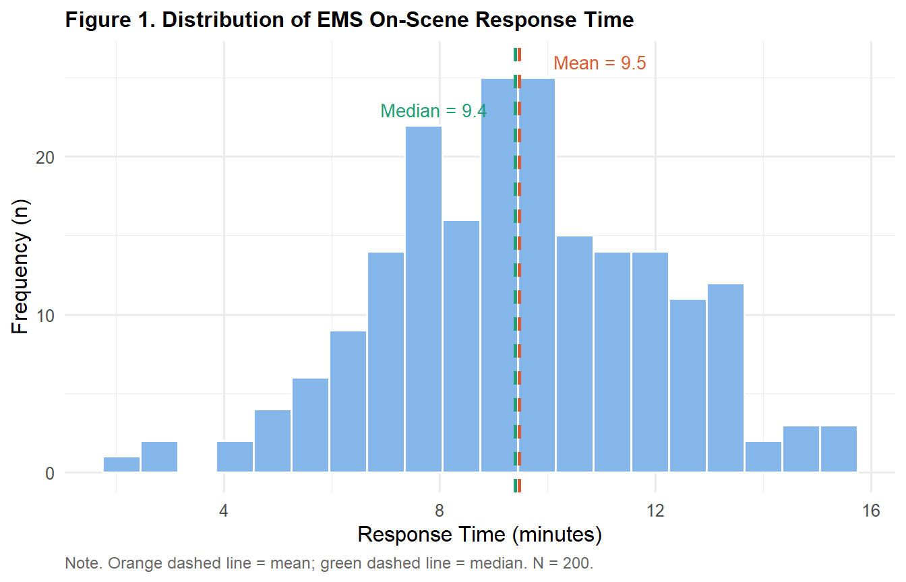
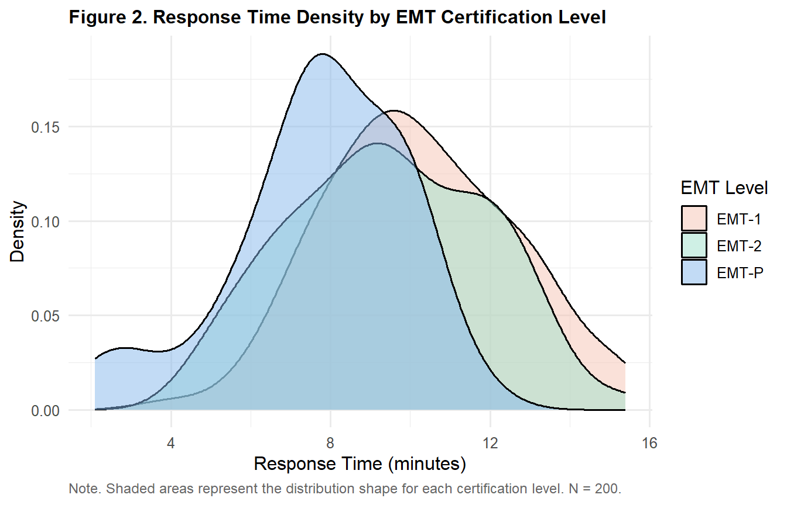
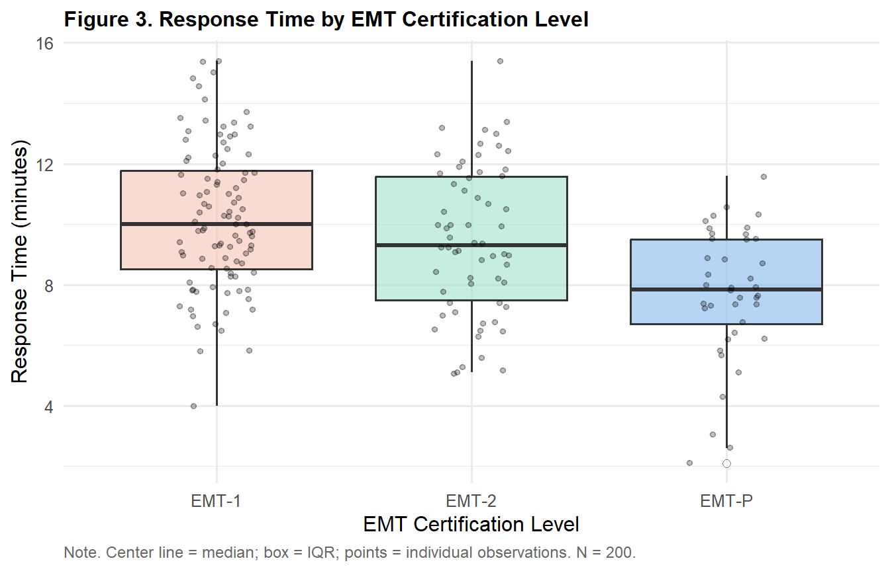
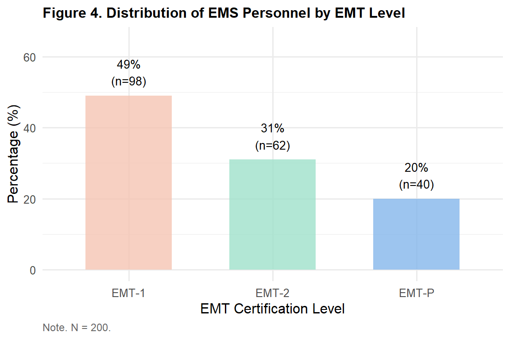
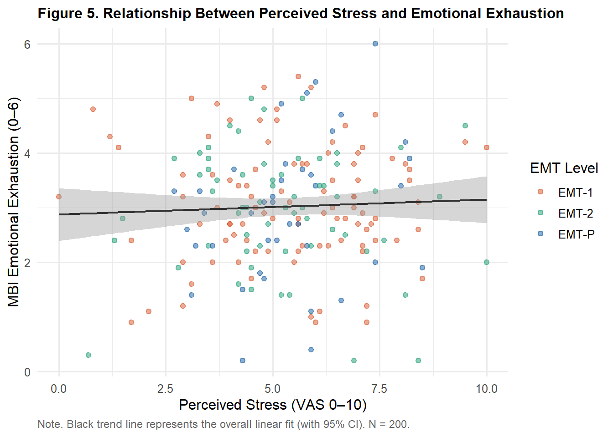

library(tidyverse)
library(gt)
ems <- read.csv("data/ems_main.csv",
stringsAsFactors = FALSE)
ems$gender <- factor(ems$gender,
levels = c("男", "女"))
ems$level <- factor(ems$level,
levels = c("EMT-1", "EMT-2", "EMT-P"))
ems$district <- factor(ems$district,
levels = c("北部", "中部", "南部", "東部"))
ems$shift <- factor(ems$shift,
levels = c("日班為主", "夜班為主", "輪班"))Topic 3：Data Visualization
ggplot2 Layer Logic, Choosing the Right Chart, APA-Format Output
Learning Objectives
- Understand the layer-based logic of ggplot2
- Select the correct chart type based on variable type
- Produce publication-ready figures following APA guidelines
- Use visualization to support and interpret descriptive statistics
Statistical Method Map (This Topic)
| X (Predictor) | Y (Outcome) | Appropriate Chart |
|---|---|---|
| None | Continuous | Histogram, density plot, boxplot |
| None | Categorical | Bar chart |
| Categorical | Continuous | Grouped boxplot, grouped bar chart |
| Continuous | Continuous | Scatterplot, line plot |
Important
Choosing the wrong chart type is one of the most common errors:
- Distribution of a continuous variable → histogram (not a bar chart)
- Distribution of a categorical variable → bar chart (not a histogram)
- Relationship between two continuous variables → scatterplot (not a line chart)
I. Statistical Theory
1.1 Why Is Visualization Part of Statistics?
Anscombe’s Quartet is one of the most famous demonstrations in statistics: four datasets share nearly identical means, standard deviations, and correlation coefficients — yet their scatterplots look completely different.
Numbers can mislead. Graphs rarely do.
Always pair descriptive statistics with visualization:
- Identical means do not imply identical distributions
- A significant p-value does not imply a large effect
- A high correlation coefficient does not imply a linear relationship
1.2 The ggplot2 Layer System
ggplot2 builds plots by stacking layers — like adding successive sheets on a drawing:
ggplot(data, aes(mapping)) ← Canvas + axes
+ geom_xxx() ← Geometric shape (points, lines, bars)
+ scale_xxx() ← Axis and color settings
+ labs() ← Title and axis labels
+ theme_xxx() ← Overall visual styleEach + adds one layer. The canvas (ggplot()) must always come first.
1.3 Understanding aes()
aes() stands for aesthetic mapping — it connects data columns to visual properties:
| aes argument | Visual element |
|---|---|
x = |
Horizontal axis |
y = |
Vertical axis |
fill = |
Fill color |
color = |
Border or point color |
shape = |
Point shape |
size = |
Point or line size |
Tip
Key rule:
- Color varies by data → place inside
aes() - Fixed color for all elements → place outside
aes()
# Color varies by level (inside aes)
aes(x = response_time, fill = level)
# All bars the same blue (outside aes)
geom_histogram(fill = "#85B7EB")1.4 Choosing the Right Chart
What do you want to show?
├── Distribution of a single variable
│ ├── Continuous → Histogram / Density plot
│ └── Categorical → Bar chart
├── Relationship between two variables
│ ├── Continuous × Continuous → Scatterplot
│ ├── Categorical × Continuous → Grouped boxplot
│ └── Categorical × Categorical → Stacked bar chart
└── Trend over time
└── Line chart1.5 APA Figure Guidelines
Important
APA 7th Edition — Key Rules:
- Figure title appears above the figure, in bold: “Figure X. Description”
- Note appears below the figure: “Note. Text.”
- No 3D effects
- Use colorblind-friendly palettes
- Figures must remain interpretable in grayscale
II. R Implementation
Load packages and data
Figure 1. Histogram — Distribution of a Continuous Variable
ggplot(ems, aes(x = response_time)) +
geom_histogram(bins = 20,
fill = "#85B7EB",
color = "white") +
geom_vline(xintercept = mean(ems$response_time),
color = "#D85A30",
linetype = "dashed",
linewidth = 0.9) +
geom_vline(xintercept = median(ems$response_time),
color = "#1D9E75",
linetype = "dashed",
linewidth = 0.9) +
annotate("text",
x = mean(ems$response_time) + 1.5,
y = 26,
label = paste0("Mean = ",
round(mean(ems$response_time), 1)),
color = "#D85A30", size = 3.5) +
annotate("text",
x = median(ems$response_time) - 1.5,
y = 23,
label = paste0("Median = ",
round(median(ems$response_time), 1)),
color = "#1D9E75", size = 3.5) +
labs(
title = "Figure 1. Distribution of EMS On-Scene Response Time",
x = "Response Time (minutes)",
y = "Frequency (n)",
caption = "Note. Orange dashed line = mean; green dashed line = median. N = 200."
) +
theme_minimal(base_size = 12) +
theme(
plot.title = element_text(face = "bold", size = 12),
plot.caption = element_text(hjust = 0, size = 9,
color = "gray40")
)
Figure 2. Density Plot — Comparing Distributions Across Groups
ggplot(ems, aes(x = response_time, fill = level)) +
geom_density(alpha = 0.5) +
scale_fill_manual(
values = c("EMT-1" = "#F5C4B3",
"EMT-2" = "#9FE1CB",
"EMT-P" = "#85B7EB"),
name = "EMT Level"
) +
labs(
title = "Figure 2. Response Time Density by EMT Certification Level",
x = "Response Time (minutes)",
y = "Density",
caption = "Note. Shaded areas represent the distribution shape for each certification level. N = 200."
) +
theme_minimal(base_size = 12) +
theme(
plot.title = element_text(face = "bold", size = 12),
plot.caption = element_text(hjust = 0, size = 9,
color = "gray40")
)
Figure 3. Boxplot — Group Comparison
ggplot(ems, aes(x = level, y = response_time,
fill = level)) +
geom_boxplot(alpha = 0.6,
outlier.shape = 21,
outlier.fill = "white",
outlier.size = 2) +
geom_jitter(width = 0.15, alpha = 0.25, size = 1.2) +
scale_fill_manual(
values = c("EMT-1" = "#F5C4B3",
"EMT-2" = "#9FE1CB",
"EMT-P" = "#85B7EB")
) +
labs(
title = "Figure 3. Response Time by EMT Certification Level",
x = "EMT Certification Level",
y = "Response Time (minutes)",
caption = "Note. Center line = median; box = IQR; points = individual observations. N = 200."
) +
theme_minimal(base_size = 12) +
theme(
plot.title = element_text(face = "bold", size = 12),
legend.position = "none",
plot.caption = element_text(hjust = 0, size = 9,
color = "gray40")
)
Figure 4. Bar Chart — Categorical Variable Distribution
ems |>
dplyr::count(level) |>
dplyr::mutate(pct = round(n / sum(n) * 100, 1)) |>
ggplot(aes(x = level, y = pct, fill = level)) +
geom_col(alpha = 0.8, width = 0.6) +
geom_text(
aes(label = paste0(pct, "%\n(n=", n, ")")),
vjust = -0.4, size = 3.5
) +
scale_fill_manual(
values = c("EMT-1" = "#F5C4B3",
"EMT-2" = "#9FE1CB",
"EMT-P" = "#85B7EB")
) +
scale_y_continuous(limits = c(0, 65)) +
labs(
title = "Figure 4. Distribution of EMS Personnel by EMT Level",
x = "EMT Certification Level",
y = "Percentage (%)",
caption = "Note. N = 200."
) +
theme_minimal(base_size = 12) +
theme(
plot.title = element_text(face = "bold", size = 12),
legend.position = "none",
plot.caption = element_text(hjust = 0, size = 9,
color = "gray40")
)
Figure 5. Scatterplot — Relationship Between Two Continuous Variables
ggplot(ems, aes(x = stress_vas, y = mbi_ee,
color = level)) +
geom_point(alpha = 0.5, size = 1.8) +
geom_smooth(method = "lm", se = TRUE,
color = "#333333",
linewidth = 0.8,
aes(group = 1)) +
scale_color_manual(
values = c("EMT-1" = "#D85A30",
"EMT-2" = "#1D9E75",
"EMT-P" = "#185FA5"),
name = "EMT Level"
) +
labs(
title = "Figure 5. Relationship Between Perceived Stress and Emotional Exhaustion",
x = "Perceived Stress (VAS 0–10)",
y = "MBI Emotional Exhaustion (0–6)",
caption = "Note. Black trend line represents the overall linear fit (with 95% CI). N = 200."
) +
theme_minimal(base_size = 12) +
theme(
plot.title = element_text(face = "bold", size = 12),
plot.caption = element_text(hjust = 0, size = 9,
color = "gray40")
)
Table 1. Descriptive Statistics by EMT Level (to accompany Figure 3)
ems |>
dplyr::group_by(level) |>
dplyr::summarise(
n = n(),
Mean = round(mean(response_time), 2),
SD = round(sd(response_time), 2),
Median = round(median(response_time), 2),
Q1 = round(quantile(response_time, 0.25), 2),
Q3 = round(quantile(response_time, 0.75), 2),
.groups = "drop"
) |>
dplyr::rename(Level = level) |>
gt() |>
tab_header(
title = "Table 1. Response Time Descriptive Statistics by EMT Level"
) |>
tab_spanner(label = "Central Tendency",
columns = c(Mean, Median)) |>
tab_spanner(label = "Quartiles",
columns = c(Q1, Q3)) |>
tab_source_note(
source_note = "Note. Units: minutes. Q1 = 25th percentile; Q3 = 75th percentile."
) |>
cols_align(align = "center", columns = -Level) |>
cols_align(align = "left", columns = Level) |>
tab_style(
style = cell_text(weight = "bold"),
locations = cells_column_labels()
) |>
tab_style(
style = cell_text(weight = "bold"),
locations = cells_column_spanners()
) |>
tab_options(
table.border.top.style = "hidden",
heading.border.bottom.style = "solid",
column_labels.border.top.style = "solid",
column_labels.border.bottom.style = "solid",
table.border.bottom.style = "solid",
table.font.size = px(13),
heading.title.font.size = px(14),
heading.align = "left"
)| Table 1. Response Time Descriptive Statistics by EMT Level | ||||||
| Level | n |
Central Tendency
|
SD |
Quartiles
|
||
|---|---|---|---|---|---|---|
| Mean | Median | Q1 | Q3 | |||
| EMT-1 | 98 | 10.21 | 10.00 | 2.35 | 8.53 | 11.78 |
| EMT-2 | 62 | 9.47 | 9.30 | 2.44 | 7.50 | 11.57 |
| EMT-P | 40 | 7.72 | 7.85 | 2.19 | 6.70 | 9.50 |
| Note. Units: minutes. Q1 = 25th percentile; Q3 = 75th percentile. | ||||||
Saving High-Resolution Figures
# Create output folder
dir.create("figures", showWarnings = FALSE)
# Save at 300 dpi for publication submission
ggsave("figures/fig3_boxplot.png",
width = 7, height = 4.5, dpi = 300)
# TIFF format (required by some journals)
ggsave("figures/fig3_boxplot.tiff",
width = 7, height = 4.5, dpi = 300,
compression = "lzw")III. Reporting Results (APA Format)
Referencing a figure:
Figure 2 shows that EMT-P personnel have a notably left-shifted response time distribution (M = 7.8 min) compared to EMT-1 (M = 10.4 min), with only partial overlap between the two distributions, suggesting that certification level may influence response efficiency (see Topic 7 ANOVA for formal testing).
Referencing a table alongside a figure:
As shown in Table 1, the median response time decreased progressively from EMT-1 (9.4 min) to EMT-2 (8.1 min) to EMT-P (6.9 min), indicating a clear gradient across certification levels.
Weekly Assignment
Q1 Plot a histogram of stress_vas, marking both the mean and median with dashed lines. Describe the shape of the distribution (normal? skewed?). Follow APA formatting.
Q2 Create a grouped boxplot comparing monthly_cases across the four districts (district). Accompany it with an APA-format gt descriptive statistics table.
Q3 Create a bar chart showing the proportion of workers with occupational injury (occ_injury) within each shift type (shift). Label each bar with the percentage.
Q4 Create a scatterplot exploring the relationship between sleep_hrs and mbi_ee, with a linear trend line. Color points by gender.
Q5 Reflection: In Figure 2, the density plot shows that the EMT-P response time distribution overlaps partially with EMT-1. What does this imply for the inference that “certification level affects response time”? How will Topic 7 (ANOVA) formally address this question?